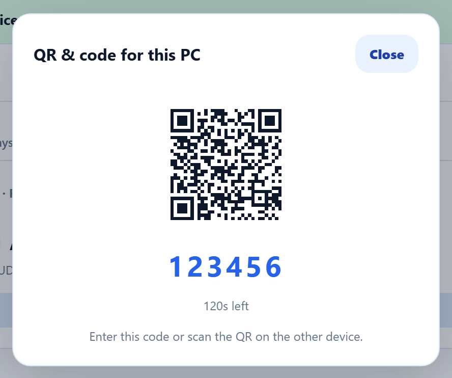
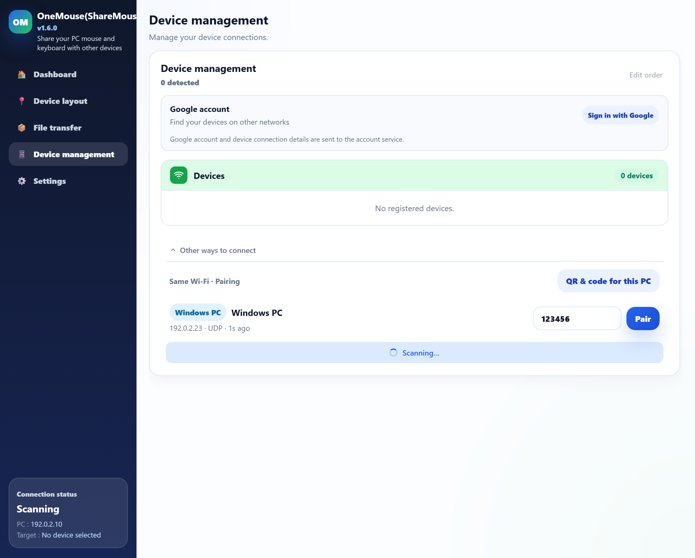

1. 移動遊標
滑一指以移指標抬起手指並重新定位以繼續移動
指南
Android設定
選擇一個 Google 帳戶, QR/ code 在同一無線網路上對對, 或是藍芽。 所有三種方法都需要 Android Accessable 來控制您的手機與 PC 滑鼠與鍵盤 。
在帳號清單中尋找您的網路連線裝置。 不需要 QR 或配對程式碼 。
需要 Internet 存取。 裝置能否連線取決於網路。 選擇 Wi- Fi 或 Bluetooth 不簽署而使用 OneMouse 。
裝置在您的帳號中失蹤或無法連線 ? ^不需要 Google 簽署。 只要連線到和手機相同的路由器, PC 可以使用有線的區域網 。
在兩個裝置上執行 OneMouse。 在 PC 應用程式中開啟裝置 。
啟用 Android 設定下的服務 ^ 存取 ^ 安裝的應用程式( 或下載的應用程式 ) ^ OneMouse。 選單名稱因製造商而異 。 另外要檢查發現所需的許可權, 如 Nearby Wi- Fi 裝置 。
在裝置中, 擴張此 PC 的 QR 和程式碼的其他連線方式。 此對話方塊顯示 QR 和六位數程式碼 。
選擇家 → 以其他方式連線 → 加入 QR 或配對程式碼。 輸入數字程式碼中的六位數字並選擇連線, 或使用 Scan QR 程式碼 → 開放相機來掃描 PC 的 QR。 選擇一個方法 。
確認 PC 在手機的家用螢幕下出現。 已登記的裝置並不每次都需要此認證 。
將手機位置匹配到手機的實際位置, 然後將滑鼠移動到 設定遊標專案通道 如果通道很窄,先試一下邊緣的中部



用例裝置和程式碼抓取的實際應用程式螢幕。 連線時使用您自己的 PC 應用程式中顯示的程式碼或QR 。 請選擇一個影像來完整檢視它 。
Bluetooth 在β。 不需要 Wi- Fi、 Google 簽署、 QR 碼或配對碼 。
這些步數是為 Windows QQ Android 的。 Bluetooth 不攜帶遠端影片。 要檢視您的手機上的 PC 螢幕, 請使用 Wi- Fi/ LAN 或支援的帳號連線 。
藍芽設定與詳細的步徑 ^輸入許可權: Android 設定 → 存取 → 安裝的應用程式(或下載的應用程式) → OneMouse. 接觸過,但老鼠不會過河?
電話位置
將每個裝置拖曳到安排螢幕中的真正位置。 Cross through the control 遊標輸入通道 通道可能只覆蓋其中的一部分。

遠端控制
在裝置中, 敲擊一對Android 的列上的遙控圖示, 並開啟一個顯示手機螢幕的獨立視窗。 您第一次開啟時, Android 螢幕需要獲得批准 。
從裝置的遠端控制圖示中開啟視窗或預設 Ctrl+ Alt+Shift+1~9。右鍵拖曳工作,在目標的 PC 瀏覽器中配置手勢延伸,與Android 手勢相隔。

Android – 視窗
參觀您的 PC 螢幕, 按下觸控, 移動遊標並用您的手機鍵盤輸入。 PC 和 Android 都需要支援此功能的最新應用程式 。

在控制面板中選擇影像質量和最大幀率。 一個支援活質變更的PC 不重新連線而應用它們。 實際解析度和幀率取決於裝置的效能和網路條件 。
要完成, 使用 控制面板 – 斷線。關閉遠端控制會讓 PC 運作。藍芽連線不帶遠端影片 。
這些說明性動畫顯示了遊標模式的基本原理。 這些動畫不是應用程式的錄影 。
滑一指以移指標抬起手指並重新定位以繼續移動
把指標移到按鈕上, 再拍一次。 點選會發生在指標上, 而不是手指上 。
將指標放在標題列或專案上, 手指不要動, 直到指標變成藍色 。 移動手指拖曳, 然後抬起來丟下專案 。
1× 時, 兩隻手指一起滑動來滾動 PC。 張開兩隻手指來放大; 放大後, 一起移動它們來遮蓋視窗 。
Android 滑鼠手勢
如何啟動手勢、七中風模式和支援限制
在設定 → 打字與剪貼簿中, 啟動 Mouse 手勢並選擇應用程式( 預設值 ) 。 PC 和 Android 都需要一個手勢能力版本 。
選擇 所有應用程式 在應用程式和家用螢幕上使用手勢。 檢查支援限制
將 PC 指標移到 Android 手機或平板上, 開啟選取的應用程式 。
箭頭和垂直測量表顯示方向和卷動的強度根據中風長度而不是你在頁面上的位置或精確的距離
| 手腕 | 動作 |
|---|---|
| ← | 退後畫到左邊以返回上一頁或螢幕 。 |
| → | 前進返回後向右畫到頁面 。 |
| ↑ | 向上卷寫出並放出。 更長的按鍵卷; 短的按鍵卷縮少 。 |
| ↓ | 向下滾動向下拉放 。 中風卷長點 、 卷短點卷長點 。 |
| ↓ → | 最小化應用程式不關上應用程式就回家去吧 |
| ↑ ↓ | 重新載入在支援的瀏覽器中重新整理頁面 。 |
| ↑ → | 最近的程式開啟最近的應用程式清單以選擇另一個應用程式 。 |
檔案剪貼簿( D)

抓取並傳送截圖( S)
抓取您的 PC 或您正在控制的裝置 。 從預覽中複製或儲存結果, 或是送至相關裝置的剪貼簿 。
如果您改變了捷徑, 請使用您設定的金鑰。 在選擇區域時, Esc 或取消不傳送影像的選擇區。

手機到 PC
區域網轉移時,選擇 預設的 PC 使用 mobile 應用程式的家用螢幕, 檢查它是否對對並連線。 從傳輸分頁或 Android 的共享選單中傳送檔案, 將文字從 OneMouse 傳送至選取選單中的 PC 。
在PC中 設定 → 一般 → 檔案傳輸 → 收到檔案位置使用 變更資料夾 選擇目的地和 開啟資料夾 以檢視它。此功能既可以在主機,也可以在子機上使用。


通知和答覆
答覆 當 PC 和 Android 支援回覆和手機通知原件提供自由文字回覆時會出現。輸入您的回覆並選擇 傳送 或 Ctrl+ 輸入 透過原手機應用程式傳送( S)Enter 新增換行符).
數字捷徑
主 PC 上至少有兩個區域網裝置, 請選擇 裝置 − 編輯命令。拖曳手柄或使用 XQ/%; 變更自動儲存, 然後選擇 完成。連線與遠端視窗捷徑數字遵循相同的順序。
Bluetooth
Bluetooth 在β。 不需要 Wi- Fi、 Google 簽署、 QR 碼或配對碼 。
Windows_Android和Windows可以直接在藍芽上交換輸入、剪貼簿和檔案。

另一臺PC


Mac 公共支助
在 Mac 上安裝公開的 DMG, 然後從 OneMouse 開始並管理 Windows 上的 LAN 連線。 跟著這五步 。
在 Windows 10/11 和 Mac 上執行 OneMouse , 兩臺電腦都連線到相同的 Wi- Fi 或 LAN。 連線從 Windows 開始並管理 。
允許 輔助使用 因此 Mac 可以執行接收到的滑鼠與鍵盤輸入。 在 macOS 15+ 上, 也允許 本地網路 ; macOS 13/14 可能不顯示此專案。
在 Windows 應用程式中開啟裝置, 並選擇已檢測到的 Mac 。
在 Windows 中輸入 Mac 顯示的 6 位元配對碼, 然後確認配對 。
將 Mac 放在安排編輯器中的 Windows 顯示處。 將遊標移過邊緣, 以控制它, 並以雙向換取檔案與剪貼簿內容 。
只能當您選擇從 Windows 檢視或控制 Mac 顯示時, 才需要螢幕與系統音效錄音許可權。 OneMouse 不捕捉系統音效 。
Mac Bluetooth 以β形式提供: 在 Mac 應用程式設定中啟用它( 預設關閉 ) 。 LAN 仍然是官方支援的路徑, 螢幕或視窗共享只使用 LAN 。
許可權
Android 輸入需要存取服務; Mac 輸入需要存取。 檢視 Android 或 Mac 遠端螢幕, 也需要螢幕捕捉或錄制批准 。
這些 PC 捷徑是預設的 。 在 PC 設定 → 捷徑中, 您可以變更每個組合, 關閉單一動作, 或是禁用所有捷徑。 如果您已變更, 請使用您已儲存的組合 。
| 預設捷徑 | 動作和條件 |
|---|---|
| Ctrl+Alt+1~9 | 主 PC: 將輸入控制與清單中的匹配裝置連線。 再按相同的數字來放出您目前控制的裝置 。 |
| Ctrl+Alt+Shift+1~9 | 主 PC: 開啟相對的遠端視窗或將已存在的視窗帶往前。 再按一次就不會關閉視窗。 它會使用相同的區域網裝置編號來做連線捷徑; 藍芽裝置不在編號中 。 |
| Ctrl+Alt+D | 顯示/ 隱藏快速丟棄區域 。 |
| Ctrl+Alt+S | 選擇您在主 PC 上控制和接收的 Windows PC 、 Mac 或 Android 裝置的區域。 沒有遙控裝置, 請抓取此 PC。 兩個應用程式必須支援此功能, 目標需要抓取許可權 。 |
| Ctrl+Alt+V | 主 PC: 在 PC 上可以看到其電話通知時, 複製檢查碼。 請先開啟電話通知中繼器 。 |
| Ctrl+V | 接收並貼上其他 PC 上覆制的共享檔案。 沒有等待共享檔案, 一般的貼子仍然可用 。 |
| Ctrl+Alt+Backspace | 主 PC : 立即將遊標傳回您自己的監控器中心, 同時控制另一個裝置 。 |
這些是送至Android的輸入組合, 從上面的 PC 應用程式捷徑設定中分開。 文字編輯依賴於目標應用程式和文字欄位的支援 。
| 預設捷徑 | 動作和條件 |
|---|---|
| PrintScreen | Android 11+: 在直接控制時抓取手機螢幕並傳送至PC. 需要存取許可權. |
| Alt+Shift+↑ / Alt+Shift+↓ | 提高/ 降低Android 螢幕亮度。 需要許可權才能修改系統設定 。 |
| Alt+↑ / Alt+↓ | 提升/ 降低Android 媒體音量 。 |
| Alt+Tab / Alt+Shift+Tab | 將最近的應用程式 / 週期反轉切換。 釋放 Alt 以輸入選取的應用程式 。 |
| Ctrl+A / Ctrl+C / Ctrl+X / Ctrl+V | 選擇支援的文字欄位中所有的 / copy / cut / plose 。 |
| Ctrl+Insert / Shift+Insert / Shift+Delete | 複製 / 貼上 / 切入支援的文字欄位 。 |
| Ctrl+Z | 在支援它的應用程式與文字欄位中撤消 。 |
預設的 Windows 捷徑對映傳送 Ctrl 做為指令, Alt 做為選擇。 您可以在 Mac app 鍵盤設定中切換到本地 Mac 變更器對映 。 這不意味在以上 Windows 應用程式的捷徑中用 Command 取代 Ctrl 。